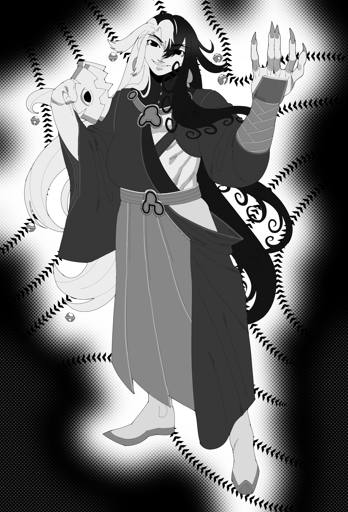
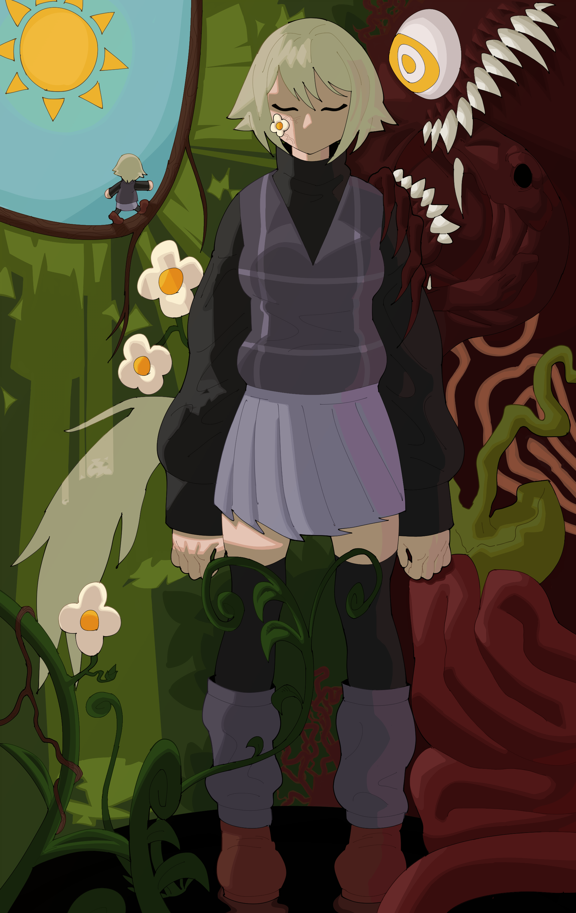
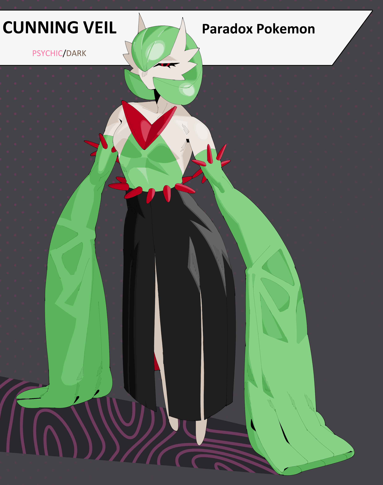

Welcome to my page. My name is Christian Dorato, age 21. My hobbies include playing video games
and drawing for hours on end without drinking water. This is my first term of college, and the first time I've set
foot in a learning establishment since I attended the 6th grade. I'm very happy to be here, and I
hope you will be as happy to have me!
I was born in Lowell, MA where I attended school up until the 2nd grade. Come 3rd grade,
I moved to Arlington, MA where I stayed for most of my teenage years. In the 6th grade, I dropped out of
public school to be homeschooled for the rest of my school years. Before my graduation though, I moved
for the last time to Rhode Island where I currently reside. There, I applied for and received my highschool
equivalency. 3 years later, and here I am!
  